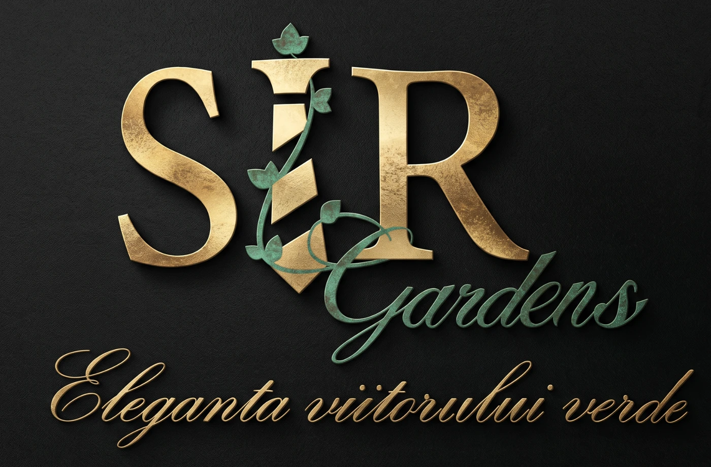
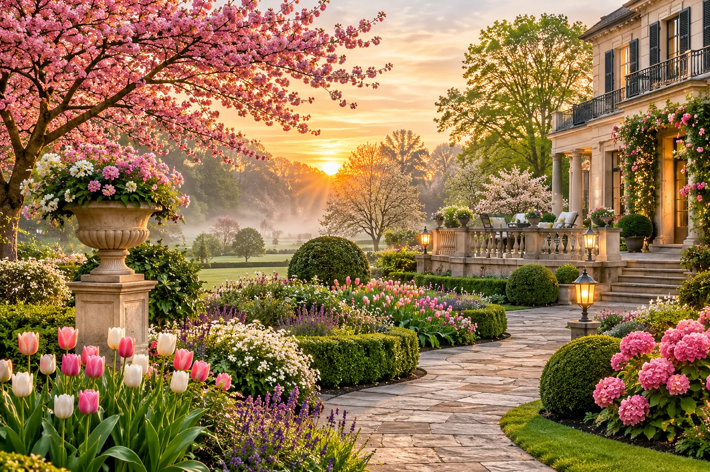
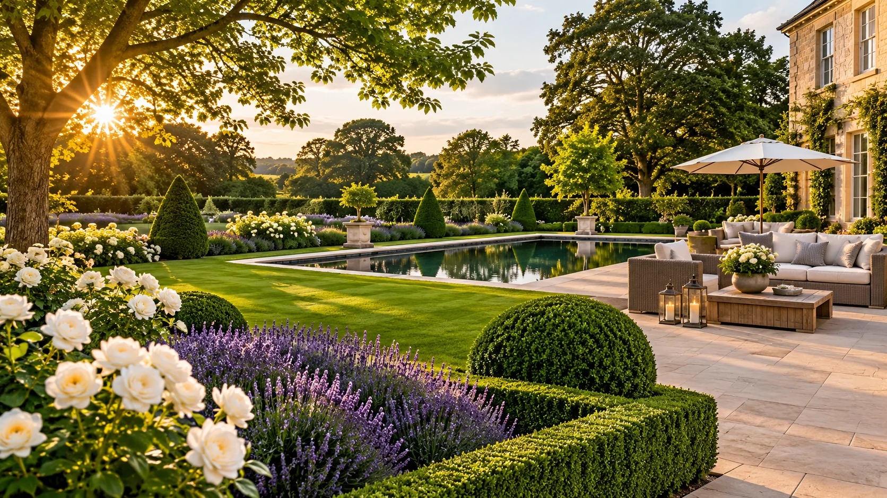

Garden design & planning
Thoughtful layouts, considered materials and a clear design direction that brings your vision to life.



SIR GARDENS · LANDSCAPE DESIGN
Thoughtful design, beautiful planting and considered details — creating outdoor spaces to live in, grow with and love.
A truly beautiful garden is never standing still. It changes with the light, the weather and the passing of time.
We bring structure, colour and quiet character together, so your outdoor space has something wonderful to offer in every season.
More than a garden.
A place to belong.
Whether you are reimagining a small courtyard or transforming an entire landscape, every detail begins with understanding how you want to feel in your garden.
Thoughtful layouts, considered materials and a clear design direction that brings your vision to life.
Beautifully built pathways, patios, levels, borders and outdoor spaces made for everyday living.
Layered planting, seasonal colour and soft, natural textures that give your garden its character.
Ongoing care and thoughtful improvements to keep your outdoor space looking its best.
The best gardens feel effortless. Behind that feeling is a careful process — listening, planning and bringing every element together with purpose.
We listen
Your ideas, routines and ambitions shape the starting point.
We shape
A considered design connects the house, garden and wider setting.
We bring it to life
Every finish and planting choice works towards the whole.
Explore the changing character of the garden, from the first spring flower to a quiet winter evening.
Rich foliage, gentle light and a garden that feels wonderfully tucked away.
Tell us a little about your garden, your ideas and what you would love to change. We would be delighted to hear from you.